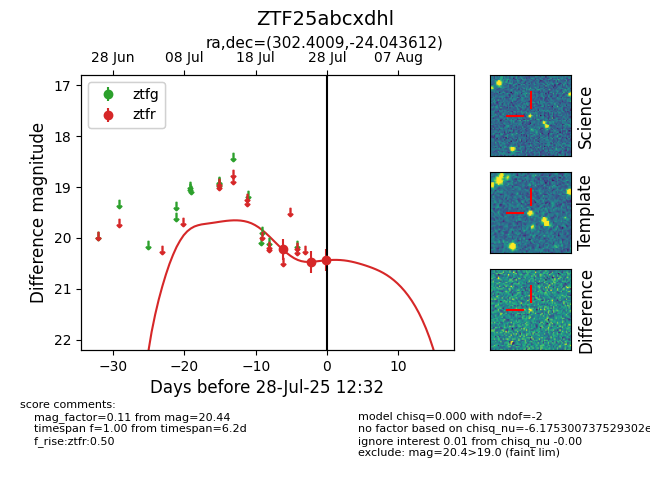

Target ZTF25abcxdhl at 2025-07-28 12:32, see:
FINK: fink-portal.org/ZTF25abcxdhl
Lasair: lasair-ztf.lsst.ac.uk/objects/ZTF25abcxdhl
ALeRCE: alerce.online/object/ZTF25abcxdhl
alt names
ZTF25abcxdhl (ztf,fink)
coordinates:
equatorial (ra, dec) = (302.4009,-24.04361)
galactic (l, b) = (18.3853,-27.23516)
photometry
last ztfr=20.44
3 ztfr detections
